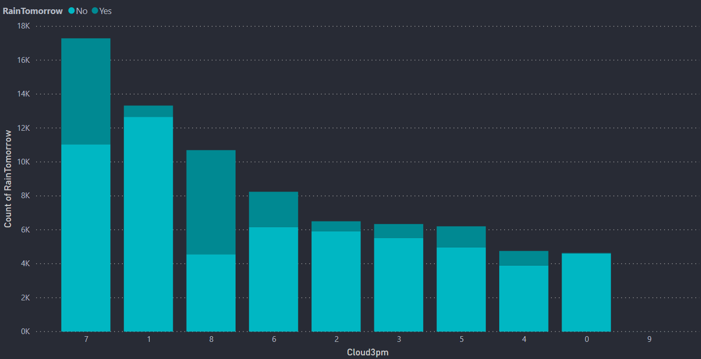
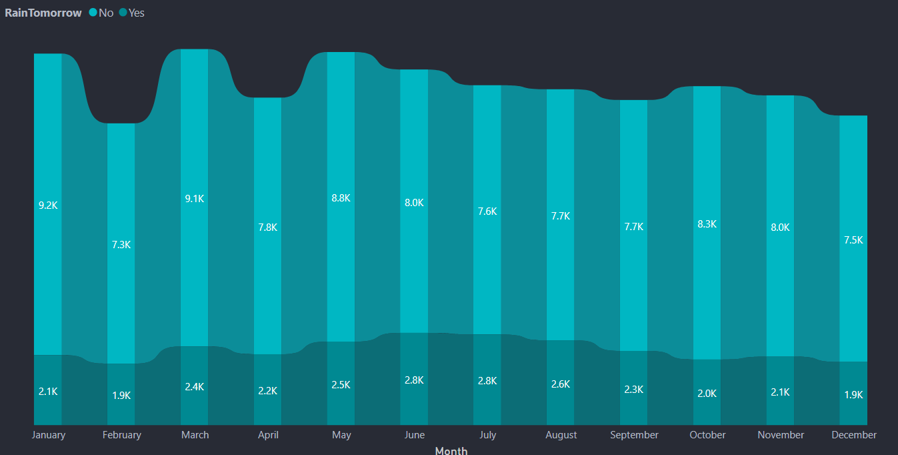
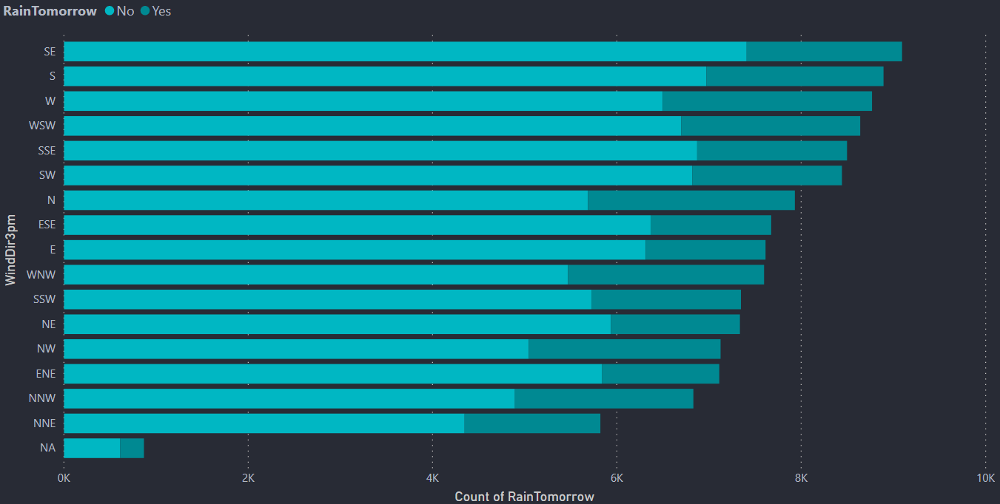
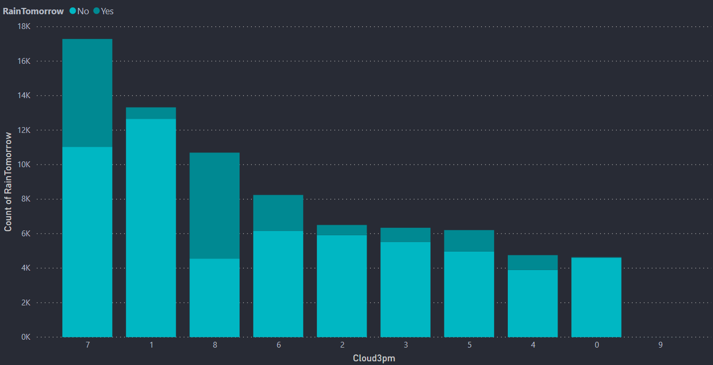
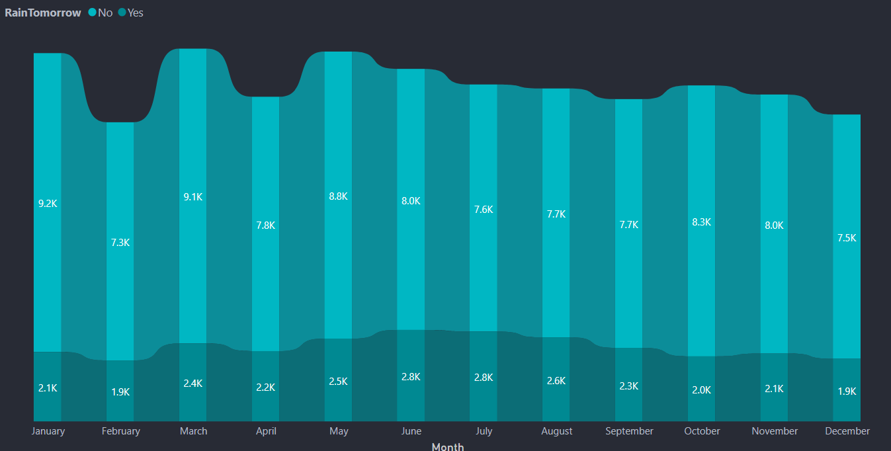
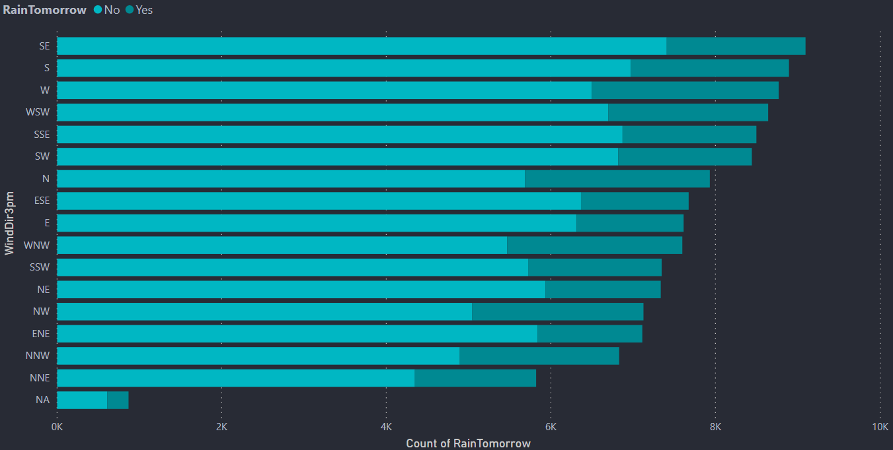

Plant Trees
Save Rain
"Plant trees to bring the rains and get rid of the summer's heat.” - Trees help reduce and moderate the temperature and climate, which is why it is so important that we have more of them
More info"Plant trees to bring the rains and get rid of the summer's heat.” - Trees help reduce and moderate the temperature and climate, which is why it is so important that we have more of them
More infoRainy Brain is a web app which has a Machine Learning model running at the back. The purpose of developing this app is to predict whether it will rain the next day or not. This model is based on the Rain Prediction in Australia dataset. The codes for this project can be checked in my github repo. More than 80% of Australia has an annual rainfall of less than 600 mm which is less among the all continents other than Antartica which recieves less rainfall. A place inland near Lake Eyre would only receive 81 mm of rain annually. The average annual rainfall in the Australian desert is low, ranging from 81 to 250 mm. Thunderstorms are relatively common in the region, with an annual average of 15 to 20 thunderstorms. The southern parts of Australia get the usual westerly winds and rain-bearing cold fronts that come when high–pressure systems move towards northern Australia during winter. Cold snaps may bring frosts inland, though temperatures near the coast are mild or near mild all year round. Summers in southern Australia are generally dry and hot with coastal sea breezes. During a lengthy dry spell, hot and dry winds from the interior can cause bushfires in some southern and eastern states, though most commonly Victoria and New South Wales. The tropical areas of northern Australia have a wet summer because of the monsoon. During "the wet", typically October to April, humid north-westerly winds bring showers and thunderstorms. Occasionally, tropical cyclones can bring heavy rainfall to tropical coastal regions, which is also likely to reach further inland.
This dashboard is done using a software called PowerBI which is a product of Microsoft. Here I have just attached the images of the dashboard because PowerBI needs oraganizational account. So to see the visualizations interactive I am attaching my PowerBI dashboard file. This requires PowerBI software to open the file. The usage of dashboards like these is to bring a better understanding about the dataset and also to bring some beautiful insights


 







Hi, I'm Vasanth, a Data Scientist 🚀 from India. Currently, I'm learning ML, DL, CV & NLP. I have an experience as a Data Science Intern in a company called prithvi.ai situated at Noida for around three months. Now currently I am trying to do some self - paced projects in data science like Rainy Brain, Smart Attendance System, J.A.R.V.I.S, etc.. I also have experience of taking webinars in my college. I am also trying to do some projects for my college too. Always curious to learn something new in the field of Data Science. Beside's programming, I enjoy playing games and watching youtube. Below I have given my social media links. Happy to have new connections.